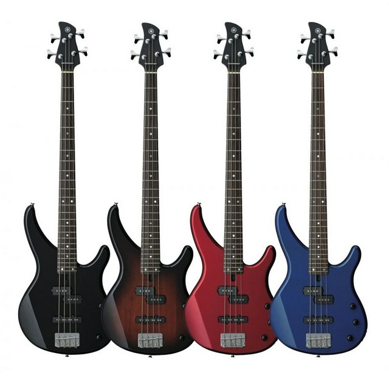
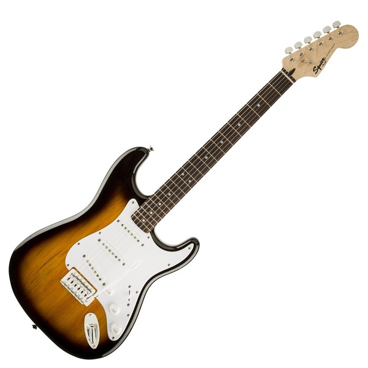

Yamaha TRBX174
Reseña completa del modelo más económico de Yamaha ¿El posible rey de la gama de entrada?

Squier Bullet
El flamante modelo de entrada de la línea Squier de Fender, vea la comparativa con otros modelos en su rango de precio.

Ibanez SR505
El clásico modelo "todo terreno" de Ibanez, exploramos a fondo su circuito activo y sus casi infinitas posibilidades.